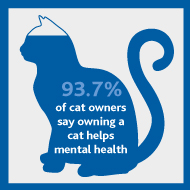

How do cats affect Mental Health?
- Cats can allow people to sleep easier. Studies have shown that people
who have let cats sleep in their bed have had an easier time sleeping.
They also cause people to wake up fewer times during the night and experience
less fatigue.
- Cats end up boosting people’s self esteem. This is because having to
take care of something else other than yourself ends up giving a feeling
of fulfillment or satisfaction, and the more of that we experience, the
more confidence we end up having in ourselves.
- These felines are very therapeutic as they pur. It ends up lowering stress
levels, decreases the symptoms of Dyspnoea (causes difficulties in breathing
and lessens the chance of a heart attack to occur in a person. Even if a person
worries too much, a cat purring is enough to make them stop thinking about every
little thing.
- Cats are also very good to have in an ergonomic environment as they do not make
much nice and just mind their own business. A lot of people who work at home tend to
have cats and they claim that it is very relaxing to be owning them.
